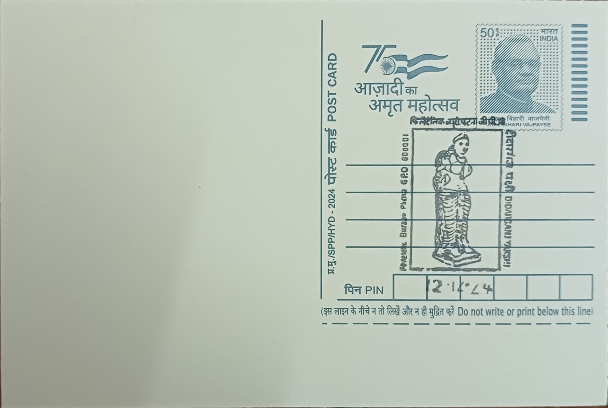

Didarganj Yakshi
दीदारगंज यक्षी


The Didarganj Yakshi takes its name not from any ancient title but from the village of Didarganj on the southern bank of the Ganges in Patna City, where the sculpture surfaced from the riverside mud in October 1917. Accounts of the find differ: one credits a local resident, Ghulam Rasul, with the discovery, while another holds that villagers chasing a snake into its burrow dug into the bank and struck the buried figure. Word reached Professor J. N. Samaddar, and with the involvement of officials E. H. C. Walsh and D. B. Spooner, the statue was recovered and brought under the care of the newly constituted Patna Museum, itself established that same year.
As a yakshi, the sculpture represents a class of folk nature-spirits venerated in ancient India for their association with fertility, water, and abundance, a tradition that predates organized Hindu, Buddhist, and Jain image-worship and fed directly into it. Carved to depict a female chauri-bearer holding a fly-whisk, the figure is counted among the most important surviving monuments of early Indian sculpture, and its dating anchors long-running debates over the chronology of Mauryan art. Its significance lies as much in what it represents stylistically, the apparent culmination of a sophisticated court workshop tradition centered on Pataliputra, as in its subject matter.
The statue stands roughly 5 feet 2 inches tall and is carved from a single block of Chunar sandstone, the fine-grained buff stone quarried near Mirzapur that Mauryan imperial masons favored for their most prestigious commissions. Scholars have conventionally dated it to the 3rd century BCE on the strength of its lustrous surface treatment, though some art historians, pointing to the fullness of its modeling and the style of its jewelry, have argued for a later date extending into the early centuries CE. What is not disputed is the technical sophistication of its finish: a smooth, almost vitreous sheen across the exposed stone that craftsmen of the period achieved through a burnishing process whose precise method has not been fully reconstructed by modern conservators.
This lustrous treatment is the feature usually called the Mauryan polish, and the Didarganj Yakshi is often cited as its finest surviving demonstration, placing it in the same technical category as the polished Ashokan pillar capitals found elsewhere in Bihar. The sculpture's reputation carried it well beyond Patna: it was sent to London for the 1947 exhibition on art from the dominions of India and Pakistan, and decades later traveled to France and the United States as part of the Festival of India exhibitions of the mid-1980s. That American tour proved contentious, as the statue returned to India with visible damage to its left cheek, prompting a prolonged dispute between the Patna Museum and the central government over compensation before the piece was finally sent back to Bihar in 1989.
The Yakshi remained a centerpiece of the Patna Museum's collection for decades afterward before being transferred in 2017 to the newly built Bihar Museum, where it is now displayed as one of the institution's principal exhibits under dedicated climate and security controls designed to prevent any repeat of the damage it suffered on tour. Its image has since become a familiar reference point in surveys of Indian art and appears widely in exhibition catalogues and scholarly reconstructions of Mauryan Pataliputra. The sculpture today draws both specialist researchers studying Mauryan sculptural technique and general visitors to the Bihar Museum, who encounter it as the institution's best-known single object.
| Date of Introduction | August 28, 1974 |
|---|---|
| Address | Senior Postmaster, |
| Patna GPO, | |
| Patna (dt.), Bihar - 800001. |